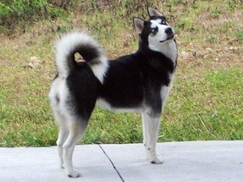

Ready for adoptionSupport that continues after adoption
Adoption is the beginning of the story.
Every animal is vet-checked, vaccinated and sterilised before adoption. Our team also provides post-adoption guidance during the first month, helping families and animals settle in together.
Discover how we work